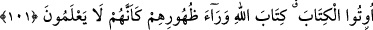

101. Allah tarafından kendilerine, yanlarında bulunanı tasdik edici bir elçi gelince
ehl-i kitaptan bir gurup, sanki Allah’ın kitabını bilmiyormuş gibi onu arkalarına atıp
terkettiler.
Onların yalanladıkları Tevrât’tır. Çünkü onların kitabını doğrulayıcı bir peygamberin
gelmesini inkâr etmeleri; içerisinde “Muhammed Allah’ın peygamberidir” yazan
Tevrât’ı da inkâr etmeleri anlamına gelir. Çünkü onlar, Tevrât’ın Allah’dan olduğuna
kesinlikle inanıyorlardı. Kitabı arkalarına atmaları, inkâr etmeleri ve onun hükümleriyle
amel etmemeleri demekti. Aslında bu, onların kitabı tamamen inkâr etmelerinden başka
bir şey değildi. Âyetteki bu örnek kıssa, kendilerini Tevrât’tan müstağnî görüp ona
itibâr etmemeleri ve ona iftirâ atmaları sebebiyle getirilmiştir.
“Bunu bilmiyorlarmış gibi” cümlesi, hâl cümlesi olup mânâ: “Onlar, Allah’ın
kitabını hiç bilmeyenlere benzeyerek arkalarına attılar.” demektir.
Denilmiştir ki: “Yahûdîler dört gruptur. Birinci grup: Tevrât’a inanan onunla amel
eden, ehl-i kitabın mü’minleridir, ki bunlar, çok azınlıktadır. İkinci grup; açıktan açığa
ve bilerek inâdla ve fıskla ahdi bozanlardır ki, “onlardan bir kısmı arkalarına
atarlar” cümlesiyle kasdedilenler bunlardır. Üçüncü grup; açıktan değil de gizlice ve
bilmeden câhilâne ahdi bozanlardır ki, çoğunluktadırlar. Dördüncü grup ise açıktan
kabûl, gizli gizli reddeden câhil görünümlü münâfık yahûdîlerdir.”
Bu değerlendirmede şuna işâret vardır: Kim câhilin yaptığını yapar ve bildiği halde
ona ters bir uygulama içerisine girerse onun da câhillerden hiçbir farkı kalmaz. Şu da
açıktır ki; câhilden ve bildiğiyle amel etmeyen âlimden hiçbir fayda gelmez. İşte bunun
içindir ki Rasûl-i Ekrem (s.a.): “Sâdece diliyle öğüt verenin sözü boşa gitmiştir; etkili
olmaz, ama kalbiyle öğüt verenin sözleri ise etkili olur.” buyurmuştur. Bu hadîsteki
birinci kısım; bilen ama bildiğiyle amel etmeyen kişi, ikinci kısım ise bilen ve
bildiğiyle amel edendir. Bu yüzden onun sözü kalblere te’sîr eder. Böylelerinin
sözünden hikmet, ibret ve fikir meyveleri doğar. Akıllı kimsenin yapması gereken şey
Allah korkusuyla, böyle insanların eteğinden tutmak, peşi sıra gitmektir.
Pişmanlık dört kısımdır:
1. Günlük pişmanlık. Kişinin bir şey yemeden evden çıkıp sonradan pişman olması
gibidir. 2. Senelik pişmanlık. Vakti geçirilip zamanında ekin ekilmediğinde meydana
gelen pişmanlıktır. 3. Ömürlük pişmanlık. Kişinin uygun olmayan kötü huylu bir hanımla
evlenmesi gibidir. 4. Ebedî pişmanlık. Allah’ın emirlerinin terkedilmesidir.
Kur’ân’ı sadece okumak sûretiyle oluşan panzehir, bâtının zehrini ortadan kaldırmaz.
Kesinlikle amel şarttır. O halde Kur’ân’ı okuyan kişi, içindeki ile amel etmelidir.
Nitekim hasta olan bir adamın tıp kitaplarındaki ilâçların adına sadece bakması,
kullanmadığı müddetçe hiçbir fayda sağlamaz. Peygamber Efendimiz (s.a.)’ın, ahlâkı,
Kur’ân ahlâkı idi. Yâni onun emirlerini tutar, nehiylerinden de kaçınırdı.
Şunu da bilmelidir ki, zâhirî ilimlerle amel etmek ancak şu dört mertebeyi bilmekle